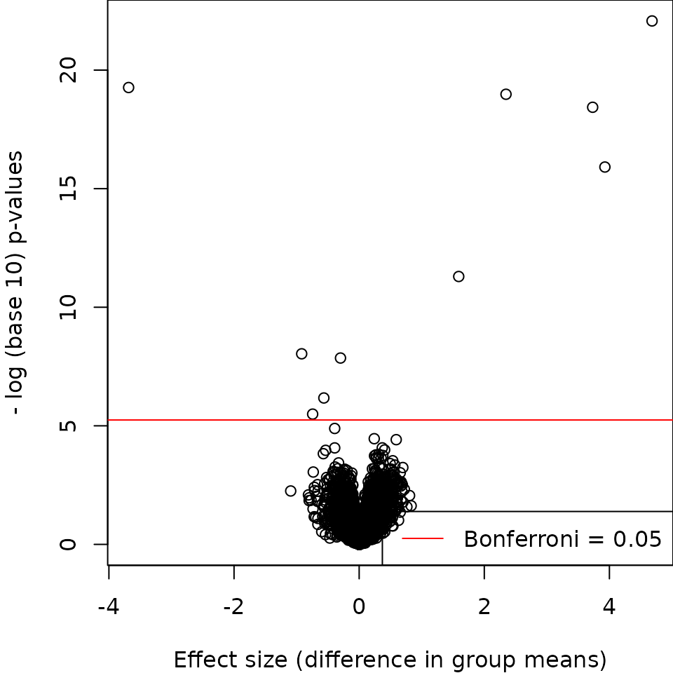

Applied Statistics for High-throughput Biology: Session 4
Levi Waldron
Source:vignettes/day4_batcheffects-vis.Rmd
day4_batcheffects-vis.RmdOutline
-
Exploratory
data analysis (Chapter 2)
- Quantile Quantile (QQ)-plots
- Boxplots
- Scatterplots
- Volcano plots
- p-value histograms
- MA plots
- heatmaps
- Batch effects (Chapter 10)
Exploratory data analysis
Introduction
“The greatest value of a picture is when it forces us to notice what we never expected to see.” - John W. Tukey
- Discover biases, systematic errors and unexpected variability in data
- Graphical approach to detecting these issues
- Represents a first step in data analysis and guides hypothesis testing
- Opportunities for discovery in the outliers
Quantile Quantile Plots
- Quantiles divide a distribution into equally sized bins
- Division into 100 bins gives percentiles
- Quantiles of a theoretical distribution are plotted against an
experimental distribution
- alternatively, quantiles of two experimental distributions
- Given a perfect fit, \(x=y\)
- Useful in determining data distribution (normal, t, etc.)
Boxplots: About
- Provide a graph that is easy to interpret where data is not normally distributed
- Would be an appropriate choice to explore income data, as distribution is highly skewed
- Particularly informative in relation to outliers and range
- Possible to compare multiple distributions side by side
Exploratory data analysis in high dimensions
library(GSE5859Subset)
data(GSE5859Subset) ##this loads three tables
c(class(geneExpression), class(sampleInfo))
#> [1] "matrix" "array" "data.frame"
rbind(dim(geneExpression), dim(sampleInfo))
#> [,1] [,2]
#> [1,] 8793 24
#> [2,] 24 4
head(sampleInfo)
#> ethnicity date filename group
#> 107 ASN 2005-06-23 GSM136508.CEL.gz 1
#> 122 ASN 2005-06-27 GSM136530.CEL.gz 1
#> 113 ASN 2005-06-27 GSM136517.CEL.gz 1
#> 163 ASN 2005-10-28 GSM136576.CEL.gz 1
#> 153 ASN 2005-10-07 GSM136566.CEL.gz 1
#> 161 ASN 2005-10-07 GSM136574.CEL.gz 1Volcano plots: Setup
T-test for every row (gene) of gene expression matrix:
library(genefilter)
g <- factor(sampleInfo$group)
system.time(results <- rowttests(geneExpression, g))
#> user system elapsed
#> 0.006 0.000 0.006
pvals <- results$p.valueNote that these 8,793 tests are done in about 0.01s
Volcano plots: Example
par(mar = c(4, 4, 0, 0))
plot(results$dm,
-log10(results$p.value),
xlab = "Effect size (difference in group means)",
ylab = "- log (base 10) p-values")
abline(h = -log10(0.05 / nrow(geneExpression)), col = "red")
legend("bottomright",
lty = 1,
col = "red",
legend = "Bonferroni = 0.05")
Volcano plots: Summary
- Many small p-values with small effect size indicate low within-group variability
- Inspect for asymmetry
- Can color points by significance threshold
P-value histograms: Example 2 (permutation)
Note that permuting these data doesn’t produce an ideal null p-value histogram due to batch effects:
P-value histograms: Summary
- Give a quick look at how many significant p-values there may be
- When using permuted labels, can exposes non-independence among the
samples
- can be due to batch effects or family structure
- Most common approaches for correcting batch effects are:
-
ComBat: corrects for known batch effects by linear model), and -
sva: creates surrogate variables for unknown batch effects, corrects the structure of permutation p-values - correction using control (housekeeping) genes
-
batchelorfor single-cell analysis
-
ComBat and sva are available from the sva Bioconductor
package
MA plot: Summary
- useful for quality control of high-dimensional data
- plot all data values for a sample against another sample or a median “pseudosample”
-
affyPLM::MAplotsbetter MA plots- adds a smoothing line to highlight departures from horizontal line
- plots a “cloud” rather than many data points
Heatmaps
- Detailed representation of high-dimensional dataset.
-
ComplexHeatmappackage is the best as of 2023: large datasets, interactive heatmaps, simple defaults but many customizations possible
-
Heatmaps: Summary
- Clustering becomes slow and memory-intensivefor thousands of rows
- probably too detailed for thousands of rows
- can show co-expressed genes, groups of samples
Colors
- Types of color pallettes:
- sequential: shows a gradient
- diverging: goes in two directions from a center
- qualitative: for categorical variables
- Keep color blindness in mind (10% of all men)
Colors (cont’d)
Combination of RColorBrewer package and
colorRampPalette() can create anything you want
Batch effects
Pervasiveness of batch Effects
- pervasive in genomics (e.g. Leek et al. Nat Rev Genet. 2010 Oct;11(10):733-9.)
- affect DNA and RNA sequencing, proteomics, imaging, microarray…
- have caused high-profile problems and retractions
- you can’t get rid of them
- but you can make sure they are not confounded with your experiment
Batch Effects - an example
- Nat Genet. 2007 Feb;39(2):226-31. Epub 2007 Jan 7.
- Title: Common genetic variants account for differences in gene
expression among ethnic groups.
- “The results show that specific genetic variation among populations contributes appreciably to differences in gene expression phenotypes.”
library(Biobase)
library(genefilter)
library(GSE5859) ## BiocInstaller::biocLite("genomicsclass/GSE5859")
data(GSE5859)
geneExpression = exprs(e)
sampleInfo = pData(e)- Note: the
ExpressionSetobject is obsolete, we useSummarizedExperimentnow
Date of processing as a proxy for batch
- Sample metadata included date of processing:
head(table(sampleInfo$date))
#>
#> 2002-10-31 2002-11-15 2002-11-19 2002-11-21 2002-11-22 2002-11-27
#> 2 2 2 5 4 2
year <- as.integer(format(sampleInfo$date, "%y"))
year <- year - min(year)
month = as.integer(format(sampleInfo$date, "%m")) + 12 * year
table(year, sampleInfo$ethnicity)
#>
#> year ASN CEU HAN
#> 0 0 32 0
#> 1 0 54 0
#> 2 0 13 0
#> 3 80 3 0
#> 4 2 0 24Visualizing batch effects by MDS
A starting point for a color palette:
RColorBrewer::display.brewer.all(n = 3, colorblindFriendly = TRUE)Interpolate one color per month on a quantitative palette:
col3 <- c(RColorBrewer::brewer.pal(n = 3, "Greys")[2:3], "black")
MYcols <- colorRampPalette(col3, space = "Lab")(length(unique(month)))Approaches to correcting for batch effects
-
No correction
- in my experience, the best choice for machine learning applications
-
Simple
rescaling
- Rescale observations (cells) to the same mean, variance in each batch
- maintains sparsity (ie zeros remain zeros)
batchelor::rescaleBatches()
-
Linear modeling to regress out batch effects
- use when batches are known. Fits a linear model and use residuals
- assumes the same composition of cells across batches
-
limma::removeBatchEffect(),sva::comBat(),batchelor::regressBatches()
-
Linear modeling to achieve a flat p-value histogram when
permuting labels
- can be used when batches are unknown
- “Surrogate Variables Analysis” implemented by the sva package
-
Mutual Nearest Neighbors
- developed specifically for single-cell RNA-seq
- no assumption of the same composition of cells across batches, but still assumes no meaningful biological differences exist between batches
batchelor::fastMNN()
Batch Effects - summary
- batches can be corrected for only if not
overlapping with conditions of interest
- if confounded with treatment or outcome of interest, nothing can help you
- randomization of samples to batches in study design protects against this
- during experimental design:
- keep track of anything that might cause a batch effect for post-hoc analysis
- include control samples in each batch
- tend to affect many or all measurements by a little bit
Exercises
- OSCA Multi-sample Chapter 1: Correcting batch effects